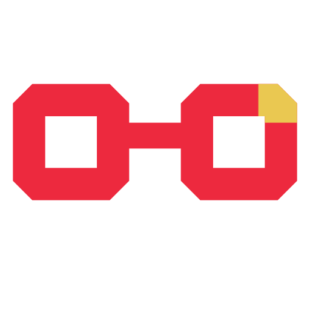
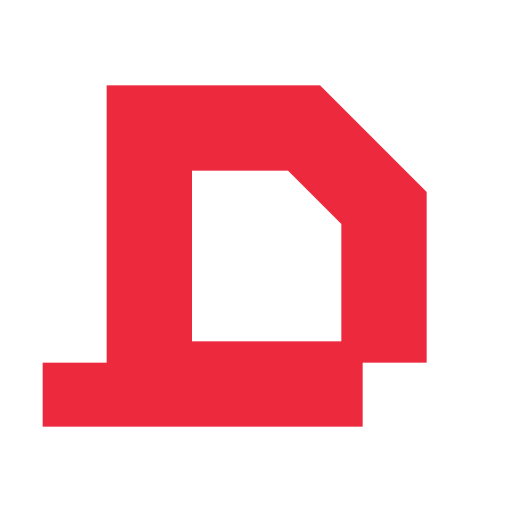
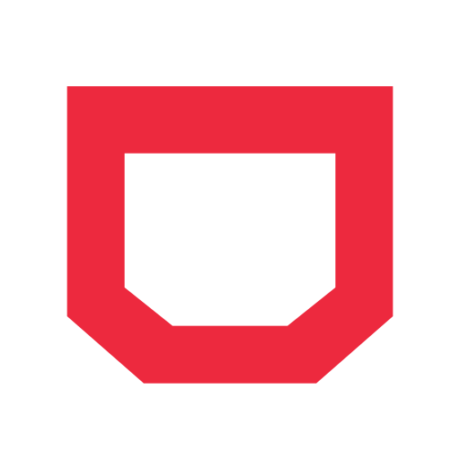
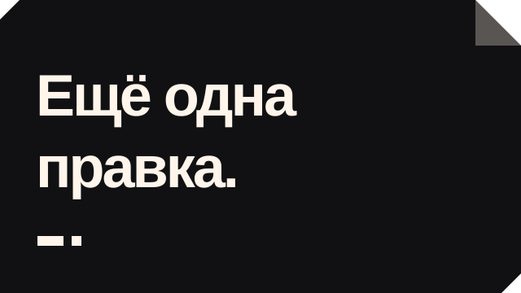
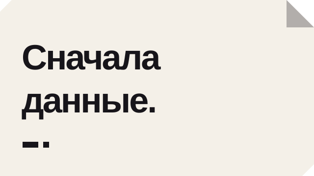
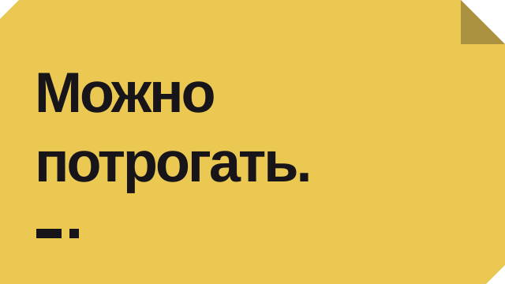

А / Фокус
Очки персонажа превращаются в самостоятельный знак. Рабочий вариант для сайта.
Личный стиль Дениса для портфолио, игр и небольших проектов. Красная куртка, жёлтые очки и крупная пиксельная геометрия — в нескольких простых деталях.
Рабочий знак — очки с жёлтым бликом. Альтернативы сохранены, чтобы к ним можно было вернуться.


Очки персонажа превращаются в самостоятельный знак. Рабочий вариант для сайта.

Буква «Д», собранная из шагов и углов. Более строгая альтернатива.

Геометрия кармана красной куртки. Знак для бирки, наклейки или небольшого ярлыка.



Знак отдельно от персонажа.
Он должен читаться в маленьком размере. Для вкладки браузера есть упрощённый favicon. Вокруг оставляем свободное место не меньше высоты отверстия очков.
Характер — в деталях.
Крупные заголовки, спокойный обычный текст, редкий жёлтый акцент. Пиксельные иллюстрации сочетаются с удобными округлыми кнопками.
Без эффектов внутри логотипа.
Не растягивать, не добавлять градиенты, тени и тонкие обводки. На сложном фоне использовать подложку или монохромную версию.
Слова без лишнего пафоса.
Говорить о задачах, решениях и реальных результатах. Наработки называть наработками, а не завершёнными релизами.